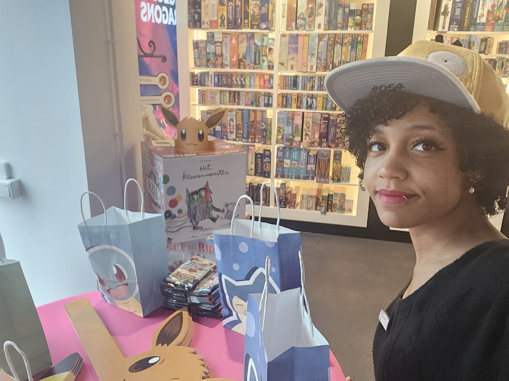
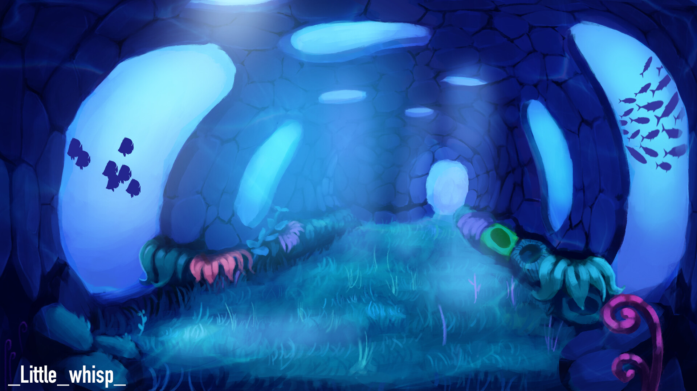
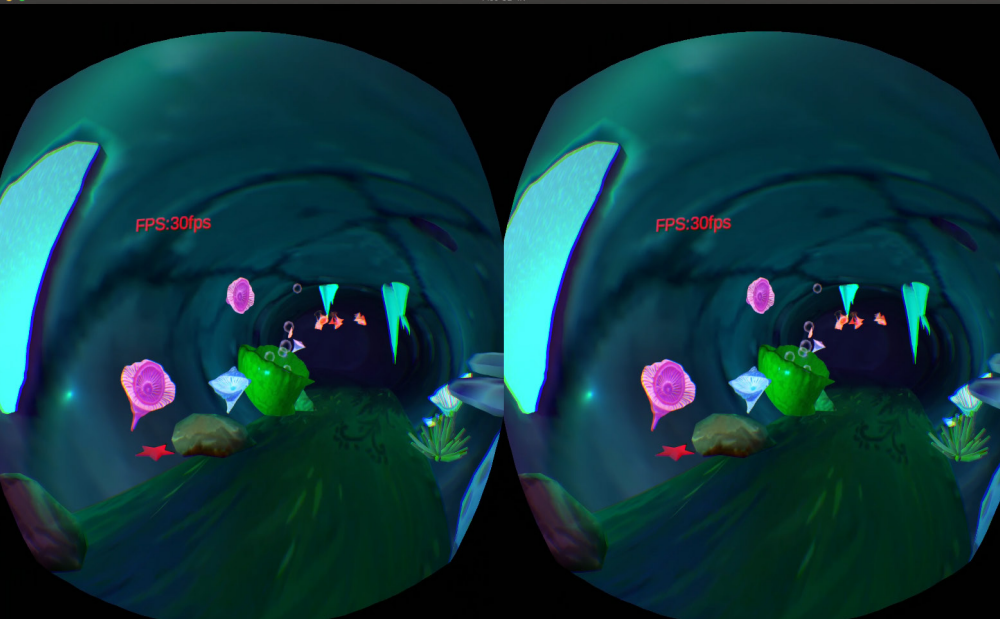
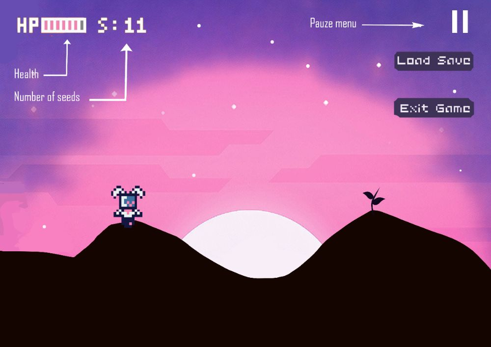
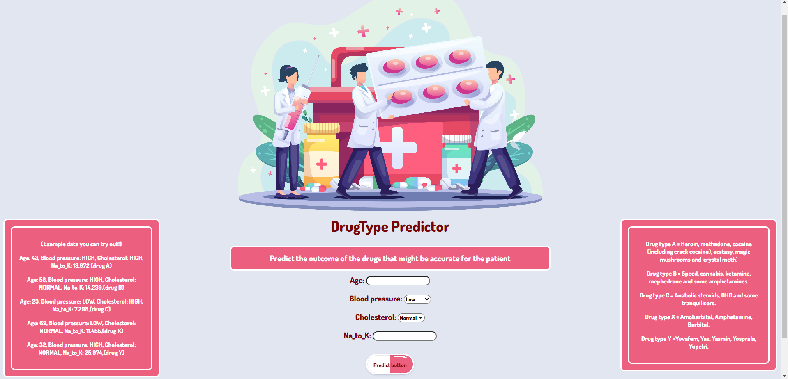
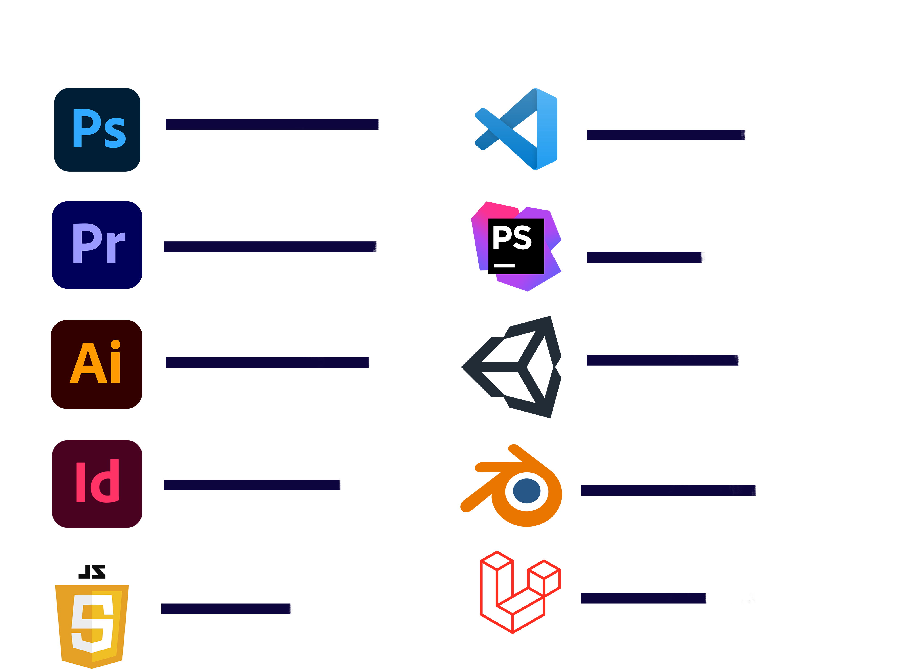

Who am I?
My name is Silviani Martis and I am a fourth year CMGT student at Hogeschool Rotterdam! I chose this study because I love technology and I love creating my own stuff. Such as games, applications, websites, robots, you name it! I love to bring concepts I come up with to life and use my creativity to make that happen in a way that makes people happy :)

Work experience
Currently I work at a store called Spellenwinkel Where we sell boardgames and TCG games like Magic the Gathering and Pokemon. I love helping customers and giving them advice on what game they should buy. Combining my passion for games with my work is one of the coolest things ever. (2024 - Currently)

I worked at a company called Sync VR. Sync VR Medical is a company that focuses on using Virtual reality to help out in the medical world. A group of goofballs that want to make things big and help people. I used to film with a 360 camera for projects and edit video's for virtual reality. I also make something we call, relax and distract exercises. Where I worked on this game like environment that helps the player relax and get distracted while undergoing a medical procedure. (2022 - 2024)


Click to view: Video demo Underwater scene - relax and distract exercise
Click to view: 360 video Tripsdrill - (filmed and edited by me :D)
For my school I worked at project that's called VR lab, where I got the opportunity to introduce students to new technology such as cool VR headsets like the Varjo, 3D scanner applications, the Hololense and much more. VR lab wants students to be able to use the tech they offer quick and easy. That's why they give workshops for programs like Unity where you get to make your own little game, blender for 3D modeling and I also gave my own workshop about 360 editing in Premiere Pro! That's why it used to be my job to play around with new technology and look for creative methods on how VR lab can share that technology with students in an accessible way. (2023 - 2024)

Game school project (year 1) - Synthese
For this school project, we got to make an education game for kids. We called it Syntheses and mostly wanted to bring the theme of the game to life. We wanted the style to be Memorable and nice to look at. I mostly worked on the art of Syntheses and the code of the shoot function and the movement of our character Didi.
Click to play: Prototype Synthese

Machine learning project (year 2) - DrugType Predictor
For this project, we had to make a web application that used machine learning to predict something. My application predicts the outcome of the drugs that might be accurate for a patient! I took the opportunity to go all out with the style of the website because the visuals where very important during this project, because next to making a functioning website we as CMGT students find it very important to make our projects visually pleasing.
Click to view: Drugtype predictor website

PLE Project year 3 (Work in Progress)
Currently I'm working a project for school where I'm going to create a short virtual experience where you play as a bartender and engage in interactions based on how you judge the appearance of avatars. Your task is to serve drinks to avatars based on specific prompts, like "Serve a drink to someone who looks friendly", While you collect points for doing your tasks correctly. At the end of the experience, you’ll get insight into your decisions and how your interactions compare to those of other players.That’s how I want to gain insight into biases and perception in virtual environments.

I've been making this game in Unity using C#, which has been so much fun. I've worked in Unity before, but I never coded my own features until now, and I've really been enjoying it. I was really nervous when I started but after trying out some things I got a lot more comfortable in the work flow of coding in Unity, which is something I'm actually a little proud of! Sometimes I need a little help from Copilot, but I've already learned so much while working on this game over the past few weeks! I can't wait to see what the final result will look like. I'm still working on this project, but below you can see what I have so far.
